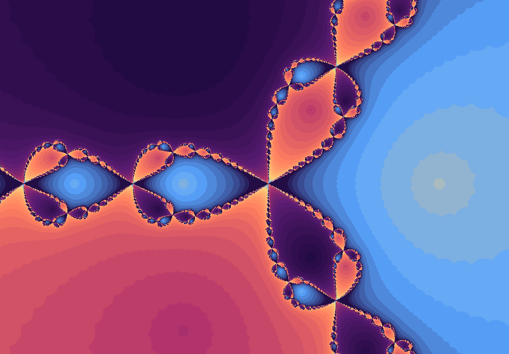

Fractal gallery
Newton Fractal
A map showing which guesses find which root.
Newton's method is usually taught as a numerical tool. In the complex plane it becomes a territorial map: every starting point is colored by the solution it eventually finds, and the borders between territories are fractal.

What to try first
Find a place where three colors meet. Those borders are the most sensitive regions: a tiny move can send the iteration to another root.
Enable orbit display near a boundary and compare it with a point deep inside a single-colored basin.
After this page, open User Defined Newton and try your own polynomial.
Guesses falling toward solutions
Each dot below is an initial guess \(z_0\) for the equation \(z^3-1=0\). Press More iterations to apply one Newton-Raphson step. The three colored destinations are the three solutions of the equation.
Mathematical notes
Newton's method as a dynamical system
For a function \(f\), Newton's method repeatedly applies \(z_{n+1}=z_n-f(z_n)/f'(z_n)\). A root becomes an attracting destination, and each pixel belongs to the basin of the root reached from that starting point. wxChaos' built-in Newton fractal maps convergence behavior for a cubic root-finding problem.
What is the Newton-Raphson method?
Newton-Raphson is a way to solve \(f(z)=0\) by progressively improving a guess. At the current guess \(z_n\), it uses the derivative \(f'(z_n)\) as a local linear approximation, predicts where that approximation reaches zero, and uses that crossing as the next guess.
The update rule is \(z_{n+1}=z_n-f(z_n)/f'(z_n)\). For \(f(z)=z^3-1\), the roots are \(1\), \(-\frac{1}{2}+\frac{\sqrt{3}}{2}i\), and \(-\frac{1}{2}-\frac{\sqrt{3}}{2}i\). Newton iteration sends most starting guesses toward one of those three destinations.
Why does root finding produce a fractal?
If a starting point is already close to one root, Newton's method usually falls into that root quickly. Farther away, the tangent step can jump across the plane. The real action happens near the boundary between basins. Two nearly identical guesses can be pulled toward different roots after several steps.
Those boundary regions fold and repeat under the Newton map. Coloring every starting guess by the root it reaches turns numerical sensitivity into visible geometry: smooth basins surrounded by intricate fractal borders.